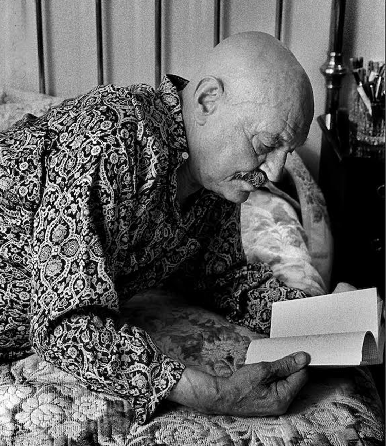

"Amigos:
yo estaba muerto. Estaba
en mi cama tendido.
Se está muerto aunque lata
el corazón, amigos".
JOSÉ HIERRO, Quinta del 42;
1953.
JOSÉ HIERRO
Introducción
Biografía
Poemas
PASADO
Ahora que vuelve a ser la tarde
de plata y gris, ahora que tengo
ante mis ojos, en mi lengua
el color, el sabor del tiempo
ahora, por fin, ¡qué dolorosa-
mente, qué claro y fiel lo veo!
Parece que ando por la tierra
asistiendo a mi propio entierro,
que estoy colgado en el presente
igual que un ojo gigantesco,
contemplando toda mi vida,
que hace nido en mi propio cuerpo.
Yo, desde fuera de la carne
impasiblemente lo veo.
Marcha mi cuerpo por la orilla.
Se detiene (no: me detengo).
Juega o se tiende entre unas rocas
y se duerme, mientras lo velo,
sin que yo pueda despertarle
de sus mentiras y su sueño.
José Hierro Tierra sin nosotros, 1947.